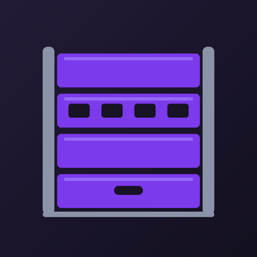

ToreDexStand: 28.11.2026 · Gilt für die mobile App „ToreDex" und diese Website.
Alexander Pfalz
Hofsatz 29, 7082 Donnerskirchen, Österreich
E-Mail: datenschutz@dexware.app
E-Mail-Adresse und Passwort (verschlüsselt) zur Anmeldung. Bei Anmeldung über Google erhalten wir von Google Ihre E-Mail-Adresse zur Konto-Erstellung; wir erhalten kein Google-Passwort. Rechtsgrundlage: Art. 6 Abs. 1 lit. b DSGVO (Vertragserfüllung).
Von Ihnen eingegebene Angaben zu Ihrem Betrieb, Ihren Objekten (Name, Adressen, Ansprechpartner) und den Toren (Torart, Antrieb, Hersteller, Baujahr, Maße, Seriennummer, Referenzfotos). Objekt-Adressen werden zur Zuordnung des GPS-Stempels in Koordinaten umgerechnet. Rechtsgrundlage: Art. 6 Abs. 1 lit. b DSGVO.
Beim Dokumentieren einer Prüfung speichern wir Zeitpunkt, Prüfart (Sichtkontrolle oder Sachkundigen-Prüfung), die Ergebnisse der Checkliste (ASR A1.7 / DGUV Information 208-022), erfasste Mängel samt Beseitigungsvermerken, optionale Notizen und Fotos sowie die aktuelle Geräteposition (GPS-Stempel). Diese Daten dienen dem Nachweis der Erfüllung der Betreiberpflichten (Beweiszweck). Rechtsgrundlage: Art. 6 Abs. 1 lit. b und f DSGVO (berechtigtes Interesse an nachvollziehbarer Dokumentation).
Der Standort wird ausschließlich im Moment der Prüf-Dokumentation im Vordergrund abgefragt. Es findet keine Hintergrund-Ortung und keine Bewegungsprofilbildung statt. Die Berechtigung kann jederzeit in den Systemeinstellungen entzogen werden; die App bleibt nutzbar (Nachweis dann ohne GPS-Stempel).
Die Fristen-Erinnerung und die monatliche Erinnerung an die Sichtkontrolle werden lokal auf Ihrem Gerät geplant (Benachrichtigung des Betriebssystems). Mit einem aktiven Pro-Zugang ist die Fristen-Erinnerung von selbst eingeschaltet, sofern Sie der App Benachrichtigungen erlaubt haben; fehlt die Erlaubnis, fragt die App einmal nach. Das gilt ab der App-Version, die unter „Mehr“ → „Erinnerungen“ den Punkt „Mitteilungen“ zeigt; in älteren Versionen schalten Sie die Fristen-Erinnerung dort selbst ein. Die monatliche Erinnerung schalten Sie immer selbst ein. Sie können beide jederzeit in der App unter „Mehr“ → „Erinnerungen“ oder in den Systemeinstellungen abschalten; sie bleiben dann aus. Die Fristen-Erinnerung nennt nur die Zahl der fälligen Tore und gegebenenfalls das Fälligkeitsdatum. Für die Erinnerungen und für die Test-Mitteilung werden keine Daten an uns oder Dritte übermittelt. Ob Sie die Fristen-Erinnerung ausgeschaltet haben, speichert die App nur auf Ihrem Gerät.
Anmelde-, Bestätigungs- und Passwort-Mails versenden wir über den Versanddienst Brevo (Sendinblue SAS, Frankreich).
Wenn Sie in mindestens einer Dexware-App angemeldet sind, erhalten Sie außerdem montags eine kurze Übersicht der fälligen und überfälligen Prüfungen und am Monatsanfang eine Übersicht der im Vormonat abgeschlossenen Prüfungen. Damit Sie nur eine Mail bekommen, fassen wir dafür die Angaben aller Dexware-Apps zusammen, in denen Sie mit derselben E-Mail-Adresse angemeldet sind; dazu gleichen wir Ihre E-Mail-Adresse zwischen den Datenbanken dieser Apps ab. Die Mails können Namen von Objekten, Geräten, Fahrzeugen oder Personen enthalten, die in Ihrem Betrieb erfasst sind. Die Wochen-Übersicht kann außerdem kurze Hinweise auf andere Dexware-Apps enthalten. Versand über Resend (Plus Five Five, Inc., USA) auf Grundlage der EU-Standardvertragsklauseln. Rechtsgrundlage: unser berechtigtes Interesse, Sie an Fristen zu erinnern und Ihre Nachweise zusätzlich im Postfach zu sichern (Art. 6 Abs. 1 lit. f DSGVO). Sie können die Übersichten jederzeit über den Link in jeder Mail abbestellen und den Hinweisen auf andere Apps jederzeit widersprechen (formlos an support@dexware.app); die Abmeldung speichern wir als Prüfwert (Hash) Ihrer E-Mail-Adresse.
Wenn Sie uns in der App eine Rückmeldung schicken, speichern wir Ihren Text, den Zeitpunkt, die App-Version, Gerätetyp und Betriebssystem sowie die Kennung Ihres Kontos und Betriebs, damit wir antworten und uns ggf. bedanken können (z. B. mit zusätzlichen Pro-Tagen für Ihren Betrieb). Gespeichert wird in der Datenbank der App bei Supabase (Rechenzentrum EU/Frankfurt). Bitte schreiben Sie keine Daten anderer Personen in die Nachricht. Rechtsgrundlage: Art. 6 Abs. 1 lit. b und f DSGVO (Support und Verbesserung der App). Rückmeldungen bewahren wir auf, solange wir sie für Bearbeitung und Weiterentwicklung brauchen; löschen Sie Ihr Konto, wird die Rückmeldung von Ihrem Konto getrennt. Auf Wunsch löschen wir sie vollständig (E-Mail an datenschutz@dexware.app).
Nutzung im Browser (Dexware-Dashboard, „Vor Ort“): siehe dexware.app/datenschutz.html, Abschnitt 6a.
Ihre Daten bleiben gespeichert, solange Ihr Konto besteht. Prüf-Dokumentation ist bewusst unveränderlich angelegt (Beweiszweck); mit der Konto-Löschung wird sie vollständig entfernt. Gesetzliche Aufbewahrungspflichten bleiben unberührt.
Sie haben das Recht auf Auskunft, Berichtigung, Löschung, Einschränkung der Verarbeitung, Datenübertragbarkeit und Widerspruch (Art. 15–21 DSGVO) sowie das Recht auf Beschwerde bei der Österreichischen Datenschutzbehörde (www.dsb.gv.at).
Direkt in der App unter Einstellungen → Konto löschen oder per E-Mail — Details: Konto und Daten löschen.
Diese Website wird über GitHub Pages (GitHub, Inc., USA) ausgeliefert. Beim Aufruf verarbeitet GitHub technisch bedingt Server-Logdaten (IP-Adresse, Zeitpunkt, abgerufene Seite); wir werten sie nicht aus. Rechtsgrundlage: Art. 6 Abs. 1 lit. f DSGVO (sicherer Betrieb). Übermittlung in die USA auf Grundlage des EU-US Data Privacy Framework bzw. der EU-Standardvertragsklauseln. Die Website setzt keine Cookies und bindet keine Tracker, Schriften oder Skripte Dritter ein.
← Zurück zur Startseite